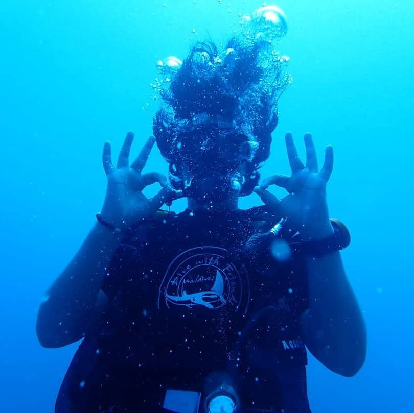

Back
-
Vanaj Moorthy
What does he know? Does he know things? Let's find out.
Hi, my name is Vanaj. I was born on the 11th of April, 2002 in New Delhi, India. At the age of four, I began my schooling at The Shri Ram School, Vasant Vihar. After seven years of loosely-structured primary "education", I made my way to the senior secondary branch of The Shri Ram School. Since then, I've mostly spent my time pursuing a wide range of interests, avoiding expulsion, convincing people I sell whale meat on the deep web, and starting gradewide societal revolutions centred around petty larceny. My subect combination includes Mathematics, Computer Science, Psychology, English, and Elective English.
CompSki 💻
My journey with programming truly began when I was in the eighth grade. My friend Shiv had learnt some basic markup and was trying to show me how you could create a website with HTML. I dabbled with HTML and CSS for a short while but my passion for programming and computer science didn't arise until the sixteenth year of my life. I choose Computer Science and wrote my first line of Java code
System.out.println("Hello, World");in early April. My journey with programming only escalated from there, my CS teacher, Rashmita Ma'am, was incredibly helpful and informative and my friend Kabir Oberai (WWDC Scholar 2017) spent most of his free time teaching me. The language I'm most proficient in today is probably JavaScript 🤮. I have extensively worked in web-development using multiple JavaScript libraries and I have an in-depth knowledge of Java as well. I'm fairly proficient in C and I've taught a Python workshop with The Girl Code, an organisation I work for. -
Design 🎨
I was eleven when I was introduced to the wonder world of Adobe. My sixth grade computers teacher introduced our whole class to Adobe Flash Professional CS6. Now while the bright minds of 6-C weren't particularly interesting in animating the Hindu god Ganesha, I learnt with fervour and even managed to animate a police officer getting murdered by the end of the year. I've always been abysmal at hand-drawn art, so the fact that I could do something that other people admired and considered art on a computer blew my mind. Now since Adobe is the most corrupt capitalist company ever, I didn't get to explore my newfound love for animation till much later in my life.
I was in the ninth grade when my brother went to university to study architecture. This is when my journey with design truly began. His course required him to use a lot of Adobe Creative Cloud software, so he decided to buy a subscription using his new student discount. This meant that I now had access to a whole world of software that I hadn't touched before. By this point Adobe Flash Professional CS6 had become deprecated and the new equivalent was Adobe Animate CC. I managed to create two basic frame-by-frame animations and showed them off to my friends. But by this point, I had become good friends with someone who, to this day, has an unquantifiable influence on my life. Srijon Sinha (A.K.A Josh). He introduced me to the wonderful world of After Effects CC. My first After Effects animation was a bunch of frame-by-frame doodles on top of a video of me playing the guitar. This, while not being the kind of animation After Effects is suited for, got me sufficiently acquainted with the sotware and my journey only skyrocketed from there. Today, I've made multiple personal motion graphics projects, worked on commissioned animations, videos, album covers, and illustrations for other people, and created pitch videos and app designs for multiple hackathon winning apps. You can find all my work here. -
Music 🎸
I was in the fifth grade when I started playing the drums. My three best friends at the time all played instruments. I'd be lying if I didn't say I felt left out. So I went and enrolled at Asha Music Academy. It was there that my love for music really began. Some time later, my mother told me that she wanted me to start playing the guitar, "Drums aren't a real instrument", seemed to be a popular notion. So I enrolled in guitar classes. I soon learnt that I wasn't cut out of string instruments, and my hatred for the guitar only intensified. I thought a change of music schools might help, so I switched my guitar classes to a different music academy near my house. It was here that my hatred for the guitar really peaked. I left six months later, swearing to never touch that cursed instrument ever again. A few years went by, I continued playing the drums and my guitar sat collecting dust in the far corner of my room. It wasn't till the fourteenth year of my life when I picked up my guitar again. I started re-learning the instrument, with intense dedication and passion and today, I can safely say that I'm a proficient guitarist. As time went by, I learnt the bass, the keyboard, the ukulele, and a whole lot of music theory. My favourite instrument to play today would probably be the guitar, even though I mostly perform as a bassist.
-
Public Speaking 🎤
I began my journey with public speaking in the ninth grade, when I participated in Jaco Model United Nations, in Calcutta, India. I left with the award of Verbal Mention, and was intensely inspired to continue on this trajectory. Since then, I've participated in numerous local and national MUNs, a plethora of debates, a few international MUNs, and have won multiple awards for public speaking.
-
Writing 🖊
I've been a voracious reader for as long as I can remember. I've consumed literature with gusto and naturally, this progressed to me trying my hand at creative writing. I wrote my first proper short story during English class, in grade five. It was called "The Attack of the Telephone Monster", and I immensely enjoyed writing it. Since then, I've continued writing short stories, informative articles, and even ran a blog (deprecated) for four years. I've exercised my propensity for writing in the Editorial Board of my school, of which I've been a member for seven years. I now hold the office of Senior Literary Editor and spend most of my time editing articles, formatting newsletters, and providing feedback on the writing of my juniors.
Find Me: